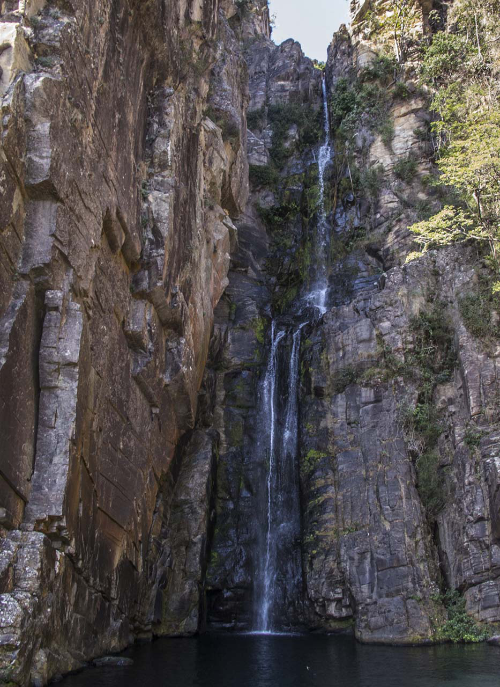

↗Cachoeira Véu da Noiva
Uma das paisagens mais conhecidas da região: queda de cerca de 70 metros, poço para banho e acesso curto a partir da área da ACM. Atrativo particular; confirme ingresso e funcionamento antes de sair.
Quero essa cachoeira ↗